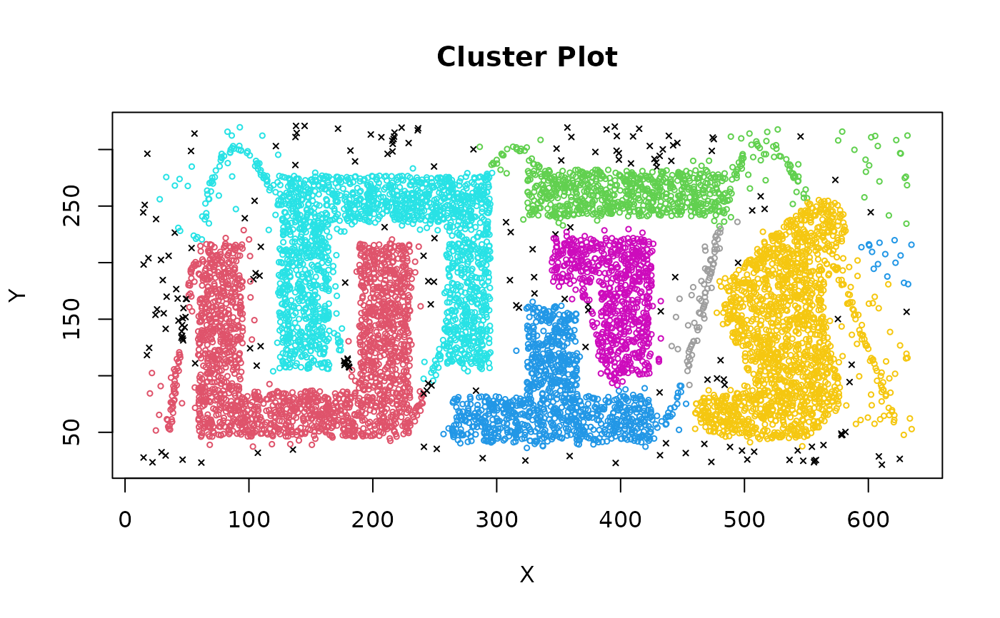

Implements the shared nearest neighbor clustering algorithm by Ertoz, Steinbach and Kumar (2003).
Arguments
- x
a data matrix/data.frame (Euclidean distance is used), a precomputed dist object or a kNN object created with
kNN().- k
Neighborhood size for nearest neighbor sparsification to create the shared NN graph.
- eps
Two objects are only reachable from each other if they share at least
epsnearest neighbors. Note: this is different from theepsin DBSCAN!- minPts
minimum number of points that share at least
epsnearest neighbors for a point to be considered a core points.- borderPoints
should border points be assigned to clusters like in DBSCAN?
- ...
additional arguments are passed on to the k nearest neighbor search algorithm. See
kNN()for details on how to control the search strategy.
Value
A object of class general_clustering with the following
components:
- cluster
A integer vector with cluster assignments. Zero indicates noise points.
- type
name of used clustering algorithm.
- param
list of used clustering parameters.
Details
Algorithm:
Constructs a shared nearest neighbor graph for a given k. The edge weights are the number of shared k nearest neighbors (in the range of \([0, k]\)).
Find each points SNN density, i.e., the number of points which have a similarity of
epsor greater.Find the core points, i.e., all points that have an SNN density greater than
MinPts.Form clusters from the core points and assign border points (i.e., non-core points which share at least
epsneighbors with a core point).
Note that steps 2-4 are equivalent to the DBSCAN algorithm (see dbscan())
and that eps has a different meaning than for DBSCAN. Here it is
a threshold on the number of shared neighbors (see sNN())
which defines a similarity.
References
Levent Ertoz, Michael Steinbach, Vipin Kumar, Finding Clusters of Different Sizes, Shapes, and Densities in Noisy, High Dimensional Data, SIAM International Conference on Data Mining, 2003, 47-59. doi:10.1137/1.9781611972733.5
See also
Other clustering functions:
dbscan(),
extractFOSC(),
hdbscan(),
jpclust(),
ncluster(),
optics()
Examples
data("DS3")
# Out of k = 20 NN 7 (eps) have to be shared to create a link in the sNN graph.
# A point needs a least 16 (minPts) links in the sNN graph to be a core point.
# Noise points have cluster id 0 and are shown in black.
cl <- sNNclust(DS3, k = 20, eps = 7, minPts = 16)
cl
#> SharedNN clustering for 8000 objects.
#> Parameters: k = 20, eps = 7, minPts = 16, borderPoints = 1
#> The clustering contains 10 cluster(s) and 187 noise points.
#>
#> 0 1 2 3 4 5 6 7 8 9 10
#> 187 1812 740 998 1770 667 1666 76 49 20 15
#>
#> Available fields: cluster, type, param, metric
clplot(DS3, cl)
#> Warning: Not enough colors. Some colors will be reused.
